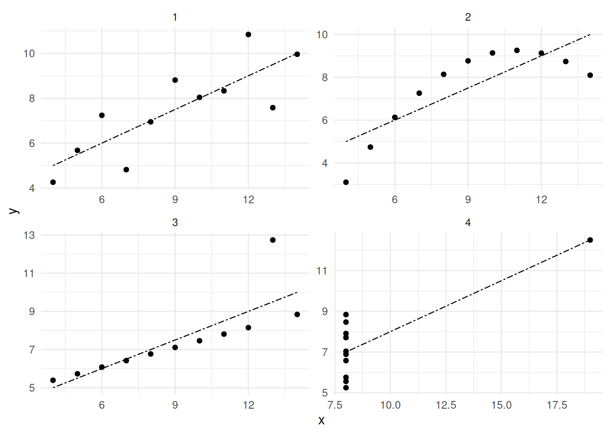
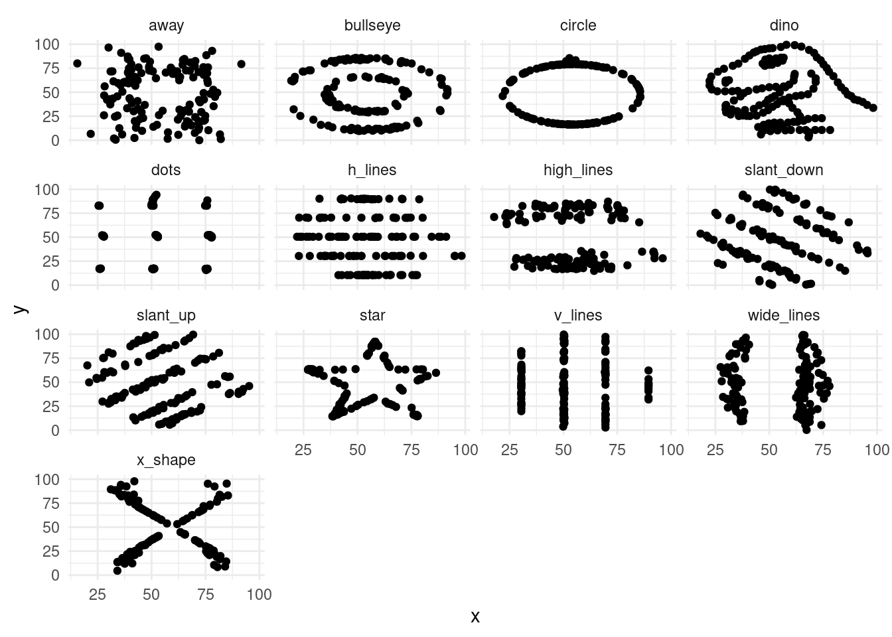
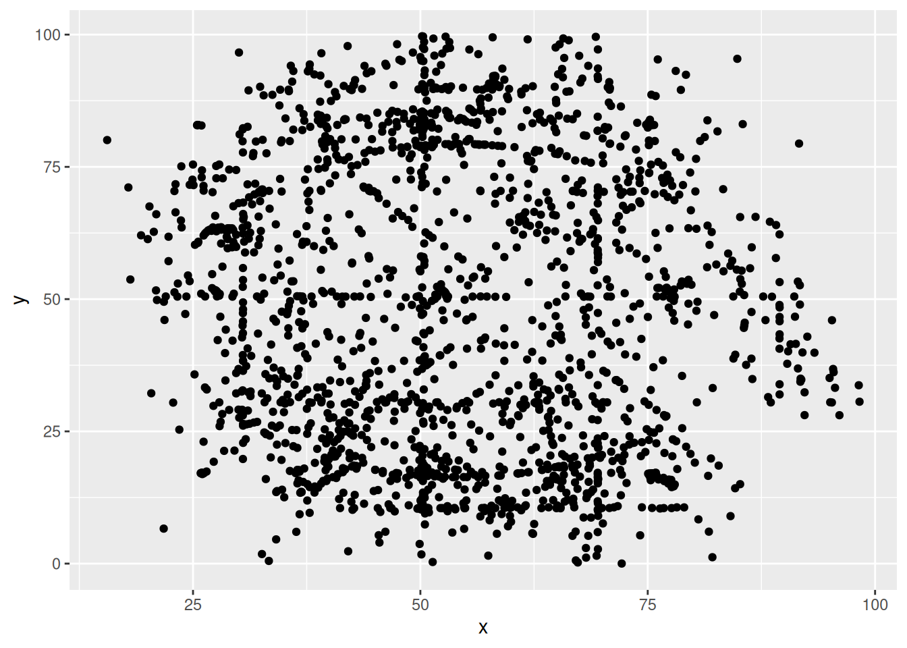
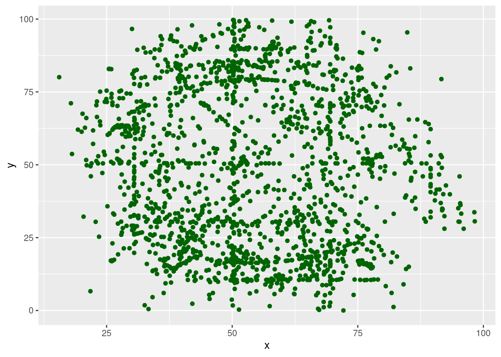
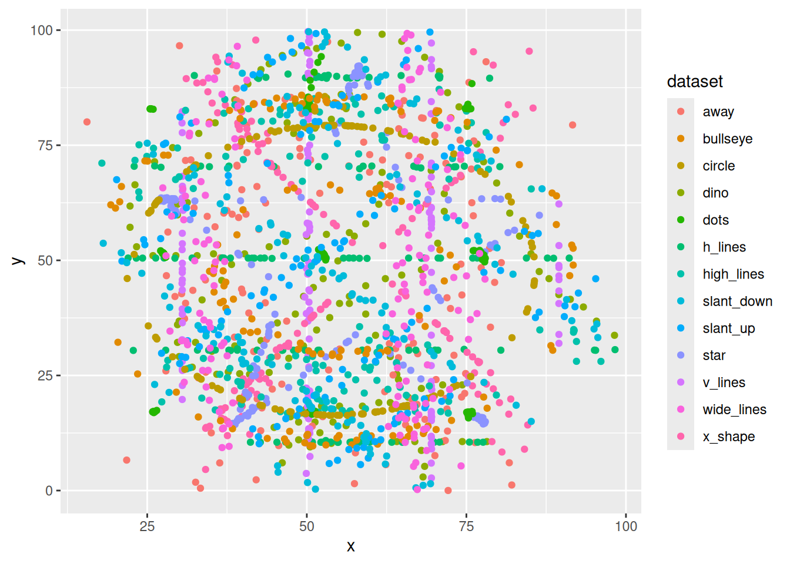

library(tidyverse)3 Визуализация данных
3.1 Зачем визуализировать данные?
Визуализация помогает окинуть собранные данные взглядом, найти ошибки ввода данных и может быть сформулировать первые инсайты. Данный раздел посвящен введения в пакет ggplot2, однако по этому пакету есть масса более подробных материалов: главы 9–11 книги (Wickham, Çetinkaya-Rundel, and Grolemund 2023) и целая книга (Wickham 2016), обе доступные онлайн. В сжатом виде информация про ggplot2 содержиться здесь.Кроме того для этого пакета написали много расширений, у каждого своя старница с инструкцией.
3.1.1 Квартет Анскомба
В работе (Anscombe 1973) представлен следующий датасет:
anscombe <- read_csv("https://raw.githubusercontent.com/agricolamz/daR4hs/main/data/w3_anscombe.csv", show_col_types = FALSE)Если смотреть исключительно на описательные статиски датасета, то покажется, что перед нами 4 одинаковых датасета:
anscombe |>
group_by(dataset) |>
summarise(mean_x = mean(x),
mean_y = mean(y),
sd_x = sd(x),
sd_y = sd(y),
cor_coeff = cor(x, y)) |>
round(2)# A tibble: 4 × 6
dataset mean_x mean_y sd_x sd_y cor_coeff
<dbl> <dbl> <dbl> <dbl> <dbl> <dbl>
1 1 9 7.5 3.32 2.03 0.82
2 2 9 7.5 3.32 2.03 0.82
3 3 9 7.5 3.32 2.03 0.82
4 4 9 7.5 3.32 2.03 0.82Однако, если мы визуализируем данные, то окажется, что перед нами совсем разные данные:

3.1.2 Датазаурус
В работе (Matejka and Fitzmaurice 2017) предложили 13 датасетов, обладающих похожим свойством:
datasaurus <- read_csv("https://raw.githubusercontent.com/agricolamz/daR4hs/main/data/w3_datasaurus.csv")
datasaurus |>
group_by(dataset) |>
summarise(mean_X = mean(x),
mean_Y = mean(y),
sd_X = sd(x),
sd_Y = sd(y),
cor = cor(x, y),
n_obs = n()) |>
select(-dataset) |>
round(1)# A tibble: 13 × 6
mean_X mean_Y sd_X sd_Y cor n_obs
<dbl> <dbl> <dbl> <dbl> <dbl> <dbl>
1 54.3 47.8 16.8 26.9 -0.1 142
2 54.3 47.8 16.8 26.9 -0.1 142
3 54.3 47.8 16.8 26.9 -0.1 142
4 54.3 47.8 16.8 26.9 -0.1 142
5 54.3 47.8 16.8 26.9 -0.1 142
6 54.3 47.8 16.8 26.9 -0.1 142
7 54.3 47.8 16.8 26.9 -0.1 142
8 54.3 47.8 16.8 26.9 -0.1 142
9 54.3 47.8 16.8 26.9 -0.1 142
10 54.3 47.8 16.8 26.9 -0.1 142
11 54.3 47.8 16.8 26.9 -0.1 142
12 54.3 47.8 16.8 26.9 -0.1 142
13 54.3 47.8 16.8 26.9 -0.1 1423.2 Первый график рассеяния
Для построения первого графика рассеяния достаточно ввести следующую команду:
datasaurus |>
ggplot(aes(x, y)) +
geom_point()
В разных пособиях можно увидеть другую запись, когда данные подаются в качестве первого аргумента:
ggplot(datasaurus, aes(x, y)) +
geom_point()Однако я буду использовать первый вариант, который мне кажется удобнее тем, что автозаполнение в таком случае предлагает название переменных. Стоит обратить внимание, что разные части при построении графиков соединяются знаком +, а не конвеером. Это связано с тем, что пакет разрабатывался и стал популярным, до того, как стала популярна вся инфраструктура tidyverse и конвееров. Поменяем цвет точек, для этого в функции geom_point() добавим аргумент color (или colour):
datasaurus |>
ggplot(aes(x, y)) +
geom_point(color = "darkgreen")
Важно понимать, что первая строчка с функцией aes() содержит инструкции как нужно использовать при отображении переменные из датасета, а аргументы в отдельных geom_ говорят, как какое-то свойство изменить для всех точек.
datasaurus |>
ggplot(aes(x, y, color = dataset)) +
geom_point()
Вторая строчка с функцией geom_point() сообщает, как мы хотим отобразить те данные, которые были перечислены в функции aes(). Функций семейства geom_...() очень много, далее мы посмотрим самые популярные функции и их аргументы.